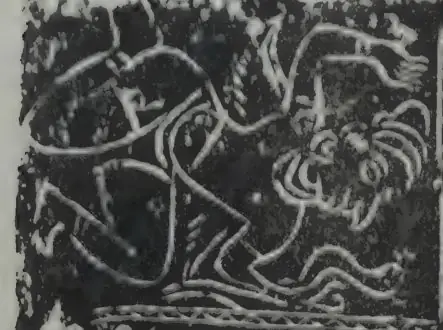

No. 35.—BETMA PLATES OF BHIOJADEVA ; [VIKRAMA-]SAMVAT 1076.
By D. B. DISKALKAR, M.A.; RAJKOT.
Though the name of the Paramāra king Bhōja of Dhārā is well known to scholars, epigraphical records of his reign are rather rare. So far only two grants of this king have been discovered: one of V. S. 1078 in Ujjain1 and the other of V. S. 1076 (Māgha, शु. di. 5) in Bānswārā2. The copper-plate grant dealt with here is thus the third known record3 of his reign
The plates were discovered, about two years ago, by a peasant while ploughing his field near a village called Betmā, sixteen miles to the west of Indore, in Central India. They subsequently came into the possession of Mr. Manekchand Jati of Indore, who takes interest in antiquities. When I had been to Indore sometime ago I found them with him. Through the kindness of the late Rao Bahadur Dr. Prabhakar R. Bhandarkar, Home Member, Holkar State, and of Mr. K. K. Lele, Superintendent, Historical Department, Dhār, I have been able to edit the inscription here for the first time.
The plates, which are two in number, are held together by two thick copper rings in the usual way. They measure 13 inches in length and 8 inches in breadth and are in an excellent state of preservation. The inscribed side of the second plate bears at its bottom in a rectangular border a flying figure of Garuḍa as is usually seen in the Paramāra grants. The sign manual of the king is affixed at the end of either plate. It is to be noted that in none of the known grants of Bhōjadēva the name of the writer of the grant is given.
The alphabet is Nāgarī of the 11th century A.D. prevalent in Mālwā, as known to us from the other records of the period, e.g. the Bānswārā plates of the same king. The consonant ब is expressed by व throughout. In fact, there is nothing to distinguish between the letters व, ब and ध. श is wrongly replaced by स in सिरसा (l. 1), कौसिक (l. 14), यसस्कराणि (l. 21) and in परयसः (l. 23). Similarly स is wrongly replaced by श in शाशनेनो4 (l. 16) and in शकला5 (l. 25). A consonant following r is generally doubled, e.g. in सर्गाय (l. 1), समम्यच्यं (l. 7), धर्मः (l. 9), विनिर्गत (l. 12), बहुमिव्वंसुधा (l. 19), etc. र at the end of a conjunct consonant is generally expressed in this inscription by the full letter added below the first consonant (e.g. tra ll. 8, 14 and 15, dra l. 5, bhra ll. 8, 9, gra l. 9, etc.), and not by a stroke turned to the left as we generally find. The letter kri in the two cases where it occurs (ll. 1 and 16) is written imperfectly, the left portion of the letter ka being omitted. The document is drawn up in Sanskrit prose mixed with verses.
Except for the following four points, our grant is practically identical with the Bānswārā grant of the same king issued in the same year:—
(1) Though the year in both the grants is the same, the months are different. The Betmā grant is dated on the 15th day of the bright fortnight of the month Bhādrapada, while the Bānswārā grant is dated on the 5th day of the bright fortnight of the month Māgha. It is to be seen, however, which is the earlier of the two grants. If we consider the year as beginning with the month Chaitra, the Betmā grant may be the earlier one. If, however, the year
1 Ind. Ant., Vol. VI, p. 53.
2 Ind. Ant., Vol. XLI, p. 201, and Ep. Ind., Vol. XI, No. 18, p. 181.
3 Mr. K. N. Dikshit informs me that another record of the reign of Bhōja dated Samvat 1091 (1084-5 A.D.) has been traced on an image of Sarasvatī which has found its way to the British Museum. I also find that the Tilakwādā plates of V. S. 1103 published by the late Mr. Kuđālkar in the Proceedings of the First Oriental Conference, Poona, most probably belong to the reign of this Bhōja. One more copper-plate grant of Bhōjadēva has recently been discovered at Kalyan in the Nāsik District. See A. S. E., 1921-22, p. 118.
began with the month Kārttika, as is the present usage in Mālwā and Gujarāt, then it must be looked upon as the later of the two. We have reasons to hold that the latter supposition is correct for, as has been already pointed out by Prof. Kielhorn,1 in the grant of Bhōjadēva of V. S. 1078, the expression अष्टसप्तत्यधिकसाहस्रिकसम्बत्तरे माघासिततृतौयायाम् i.e. on the third day of the dark half of Māgha in the year 1078, occurs in the middle of the grant and probably gives the date when the donation was made. At the end of the grant the date of its issue is given as the 14th day of the bright half of the month Chaitra of Samvat 1078. If Māgha of 1078 preceded Chaitra of 1078, the year must have commenced from some month previous to Māgha and ended subsequent to Chaitra. We can, therefore, assume that the Samvat year began then as now in the month of Kārttika. The Bānswārā grant which is dated in the month Māgha of V. S. 1076 (Jan. 1020 A.D.) is, therefore, earlier than the Beṭmā grant which is dated in the month Bhādrapada of the same year, i.e. 1076 (Sept. 1020 A.D.).
(2) The occasions when the two grants of Bānswārā and Beṭmā were made are different. In the former grant it is given as कोंकणविजयपर्वणि while in the latter it is given as कोंकणग्रहणविजयपर्वणि. Dr. Hultzsch, who edited the Bānswārā grant2, translated this' historically important expression as 'the anniversary of the conquest of Koṅkaṇa.' But it is to be noted that the period intervening between these two grants, which record almost an identical expression, is only seven months and ten days. Mr. D. R. Bhandarkar who edited the same grant3 I think gives a better translation of the expression as "on the festival day (parvaṇi) in consequence of the conquest of Koṅkaṇa." The expression in the Bānswārā grant means that 'Bhōja conquered Koṅkaṇa' and that in the Beṭmā grant means perhaps 'that he occupied it.' In the Balagāṅve inscription4 of the time of the Chālukya Jayasimha, dated Śaka 941 (December 1019 A.D.), it is stated that Jayasimha had 'put to flight the confederacy of Mālava'. From this we can conclude that in the contest for power between the Mālwā Paramāras and the Deccan Chālukyas that was going on for years together, in the first quarter of the eleventh century A.D., both the parties were successful by turns. Soon after his accession, Bhōja must have invaded the Deccan to avenge the execution of his uncle Vākpati-Muñja by the Chālukya king Tailapa, and he probably succeeded in defeating and killing Tailapa's successor, Vikramāditya V.5 When Jayasimha came to the throne in 1015 A.D. he must have retaliated by inflicting a crushing defeat on Bhōja and his confederacy sometime before December 1019 A.D. Bhōja apparently did not take long to recover. He invaded the territory of Jayasimha and conquered Koṅkaṇa, in January 1020 A.D., which was finally annexed to his empire sometime before September 1020 A.D. From the Miraj plates6 it seems that Bhōja could not retain his possession for long as Jayasimha reconquered Koṅkaṇa before the year 1024 A.D. (Śaka 946) and took into his possession 'the wealth of the Lords of the Seven Koṅkaṇas'.
(3) The grantee in the present inscription is a Brāhmaṇa named Paṇḍita Delha, son of Bhatṭa Thaṭthasīka of the Kauśika-gōtra with the three pravaras Aghamarshaṇa, Viśvāmitra and Kauśika and of the Mādhyandina-śākhā. He hailed from Sthāṇviśvara, but his ancestors had come from the village Viśālagrāma.
(4) The property granted to the Brāhmaṇa consisted of a village named Nālatadāga, one of the seventeen villages in the Nyāyapadra subdivision.
1 Ind. Ant., Vol. XIX, p. 361.
2 Ep. Ind., Vol. XI, p. 181. [In the words Kēṅkaṇ-āḥhiśvarāṇīṇ sarvvasvaṅ grīhītvā occurring in the Miraj plates (see supra, Vol. XII, p. 313, l. 66) the root grah is used in the sense of taking possession.—Ed.]
3 Ind. Ant., Vol. XLI, p. 201.
4 Ind. Ant., Vol. V, p. 17.
5 Ind. Ant., Vol. XLVIII, p. 117.
6 Ep. Ind., Vol. XII, p. 314.
As regards the identification of the localities mentioned in the grant it is to be said that Sthānvīśvara is no doubt the Thānesar of modern times situated in the Karnāl District of the Punjāb. The Nyāpaadra (subdivision) of the grant may be the town Nāpad in the Kaira District, a little to the south-west of Indore; and the gift village Nālatadāga is probably represented by the modern Nār (Nāl) in the same district. Satrāti approaches very easily to our Saptadaśaka meaning a group of seventeen villages which expression may have been afterwards wrongly construed to denote a village. The only difficulty in this identification is that this place is at a long distance from Beṭmā where the grant was discovered.
The remaining places I am unable to identify at present.
TEXT.1
First Plate.
- 1 श्रीं2 [॥*] ज[य]ति व्योमकेशोसौ3 यः सर्गाय 4विमर्ति तां । ऐंदवौ सिरसा5 लेखां 6जगद्दीजांकुराकृतिम् ॥[१*] तन्वन्तु वः
- 2 स्मरारातेः कल्याणमनिग्रं जठाः [*] कल्यान्तसमयोद्दामतडिद्दलयपिंगलाः ॥[२*] परमभट्टारकमहा-
- 3 राजाधिराजपरमेश्वरश्रीसीयकदेवपादानुध्यातपरमभट्टारकमहाराजाधिराजपरमेश्वर-
- 4 श्रीवा[बप]7तिराजदेवपादानुध्यातपरमभट्टारकमहाराजाधिराजपरमेश्वरश्रीसिंधुराजदेवपा-
- 5 दानुध्यातपरमभट्टारकमहाराजाधिराजपरमेश्वरश्रीभोजदेवः कुशली ॥ न्याय- पद्रसम-
- 6 दशकान्तःपातिनालतडागे समुपगतान्ममस्तराजपुरुषान्वा8ह्यणोत्तरान्प्रतिनिवासि- पट्टक्लिजनपदादौ-
- 7 श्व समादिशत्यस्तु वः संविदितम् ॥ यथास्माभिः स्नात्वा चराचरगुरुं भगवन्तं भवानोपतिं समभ्यर्च्यं
- 8 संसारस्यासारतां दृष्ट्वा वाताभ्रविभ्रममिदं वसुधाधिपत्यमापातमात्रमधुरो विषयोपभोगः ॥
- 9 प्राणास्त्रृणाग्रजलविंदुसमा नराणां (i) धर्मः सखा परमहो परलोकयाने ॥[३*] भ्रमत्संसारचक्राग्र-
- 10 धाराधारामिमां श्रियं । प्राप्य ये न ददुस्तेषां पश्चात्तापः परं फलम् ॥[४*] इति जगतो विनश्वरं
1 From the original plates.
2 Expressed by a symbol.
3 If we compare this grant with the other of the same year and with the third of V. S. 1078 we shall find that the prishēthamātrās are used anywhere the writer liked.
4 Read विमर्ति.
5 Read शिरसा.
6 Read जगद्दीजांकुरा6.
7 The left hand portion of the letter ka is expressed here only by a point separated from the body of the letter. Cf. similar forms in ll. 2 and 7 of the Bānswārā grant.
8 Read ब्राह्मणी8.
9 Read °स्तृणाय.... विंदु9.
... ... ... ... ... <|817|><|817|><|858|><|858|>
... ... <|213|><|817|><|217|><|858|>
... <|213|><|817|><|217|><|858|>
<|213|><|817|><|217|><|858|><|583|><|858|><|583|><|858|><|674|><|854|><|884|><|864|><|893|><|914|><|460|><|874|><|924|><|914|><|680|><|694|><|914|><|688|><|694|><|708|><|694|><|718|><|885|><|694|><|908|><|924|><|94|><|460|><|948|><|875|><|875|><|885|><|875|><|893|><|874|><|884|><|871|><|882|><|917|><|934|><|462|><|948|><|958|><|564|><|462|><|680|><|875|><|884|><|462|><|680|><|875|><|687|><|874|><|893|><|462|><|871|><|882|><|691|><|461|><|450|><|718|><|684|><|459|><|679|><|881|><|688|><|968|><|94|><|462|><|418|><|875|><|887|><|914|><|458|><|890|><|914|><|488|><|380|><|871|><|887|><|449|><|418|><|390|><|871|><|908|><|492|><|480|><|94|><|918|><|94|><|478|><|891|><|865|><|945|><|683|><|958|><|94|><|463|><|990|><|494|><|390|><|908|><|92|><|864|><|985|><|975|><|984|><|447|><|683|><|388|><|875|><|458|><|680|><|941|><|446|><|963|><|988|><|989|><|594|><|708|><|990|><|924|><|390|><|963|><|990|><|449|><|379|><|908|><|992|><|864|><|987|><|983|><|864|><|987|><|983|><|887|><|1000|><|990|><|683|><|990|><|865|><|946|><|680|><|991|><|664|><|379|><|988|><|989|><|463|><|908|><|990|><|865|><|943|><|478|><|943|><|865|><|987|><|864|><|975|><|864|><|975|><|874|><|987|><|864|><|973|><|885|><|990|><|462|><|990|><|1000|><|925|><|709|><|974|><|865|><|457|><|720|><|462|><|918|><|874|><|963|><|865|><|946|><|874|><|975|><|864|><|946|>*<|463|><|914|><|695|><|674|><|718|><|381|><|941|><|963|><|865|><|963|><|378|><|989|><|463|><|946|><|963|><|752|><|963|><|378|><|990|><|1000|><|946|><|378|><|990|><|1000|><|862|><|990|><|862|><|946|><|978|><|989|><|463|><|590|>
| 2 | 4 | 6 | 8 | 10 | 12 |
गोतिकरागो वाया यूतपर्याप्ति लागि वताकी गिति रि पुत्र राय गांधुं वशा राय किं कं
ठट्ट चिकुं गाया वांटे नादला चाका के पाशुता तिं जय पर्वां गागा गा ना राग वे शि गु गाय
ढा दि वृद्ध दा मृद्ध ह ले वरा ते ना रे इ कुं उं वे ति न राग का तया तय रा दि मा शा शा ना ना रक्त
एतं प्रति गत रे उं दि गां मा य वा रं द मा न दा दि पा के र दि रा गा द के मा जा शि वा ति वा दी
इ तां वै वा ल्पा ये उं पा वि न था गा मम था ते न द्या गा फत उं वां च वृद्ध इं शि जा गा र रा मम वी द्या
के दि र वा मृद्ध इं ते प्रभा ता या दे शु व व वे थे ० गा ते नी य शा उं के रा तं दुं दि में ये पुं का रं जां दि
मग रा दि दि द ल्पा ये था ये रा दि वे मुम्या न जा न रा एते ॥ दा नी हे र ना वि पुरा न रां इं दां ना म
वे गों यं ये ये के रा गा ॥ ने भ्रांत्य तां चिं पदि मा वि ना ने का बा मे या पुं पुं ने रा र ने ना ॥ म शा कुं
ते कुं बु छे रा रे छे रा दे र हि रा गो ग्रे व मि र कुं थे बो र नो ये ॥ ते भ्रांत्य दि भ्रांत्य उं दे र र व
ता यो वे न ए ते पर्य प द यं परि गा ते ने य वृशां ने ना न र ने ० पा ति तं च चे या दि
या मा ता न र वि कं दं ॥ गा ना ब्रा ये प्रभा रे उं थे पा गा का ते का ते पा म नो या दि वे दं
ने रे ते ना ने पु रा हे ये पर को तां दा ते तां था उं तां ॥ म शा ॥ म शा ॥ म शा ॥ म शा ॥ म शा ॥ म शा ॥ म शा ॥ म शा ॥ म शा ॥ म शा ॥ म शा ॥ म शा ॥ म शा <|34|>

11 स्वरु1पमाकलयोपरिलिखितग्रामः स्वसोमाहणगोचरयूतिपर्यन्तः सहिरण्यभागभोगः
12 सोपरिकरः सर्वादायसमेतश्च 2 ॥ विशालग्रामविनिर्गतपूर्वे[जा]य । स्याण्वीश्व-
रादागताय3 ।
13 स्वहस्तोयं श्रीभोजदेवस्य [1*]
Second Plate.
14 4कौसिकसगोच्राय । अघमर्षणविश्वामिच्चकौसिके4तिच्रिः5प्रवराय । माध्यंदिनशा-
खाय । भट्ट-
15 ठट्टसिकसुताय । पंडितदेल्लाय । कींकणग्रहणविजयपर्वणि । मातापित्रो-
रात्मनश्च पुण्यय-
16 शोभिवृद्धये । अष्टष्टफलमं[गो]कृत्य चंद्रार्काणर्णवचितिसमकालं यावत्परया
भक्त्या 6शाशनेनोदक-
17 पूर्वं प्रतिपादित इति ॥ तन्मत्वा यथा दीयमानभागभोगकरहिरण्यादिक-
माज्ञाश्रवणविधेयै-
18 भूत्वा सर्वमस्मै समुपनेतव्य7 । सामान्यं चैतत्पुण्यफलं वृध्वा 8 अस्मद्दंशजैरण्यै9-
रपि भाविभो-
19 कृभिरस्मव्यदत्तधर्मा10दायोयमनुमन्तव्यः पालनीयश्च ॥ उक्तं च ॥ 11वहुभिर्व्वसुधा
भुक्ता राजभिः
20 सगरादिभिर्य(भिः । य)स्ययस्य यदा भूमिस्तस्यतस्य तदा फलं ॥[५*] यानीह
दत्तानि पुरा नरेद्रैर्हानानि
21 धर्मार्थयसस्क12राणि ।(i) निर्माल्यवान्ति13प्रतिमानि तानि को नाम साधुः
पुनराददीत ॥[६*] अस्मत्कु-
22 लक्रममुदारमुदाहरद्विरण्यैश्च14 दानमिदमभ्यनुमोदनीयं ।[1] लक्ष्यग्रास्तडिच्छालल-
वुददचन्च15-
1 The vowel mark ū is added to र below it as is done for instance in the case of कू.
2 It will be seen that these strokes as many others following this are unnecessarily engraved.
3 This line is continued on the second plate. 4 Read कौश्रि°.
5 Read °विप्रवराय. 6 Read शासनेनी°.
7 Read समुपनेतव्य. 8 Read बुद्धा.
9 Read °रन्यैरपि.
10 Read धर्मदायो7 [not necessary —Ed.]. 11 Read वहुभि°.
12 Read यशस्वराणि.
13 Read °वान्त°. [वान्ति is also correct, see above, Vol. XI, p. 183, and Ind. Ant., Vol. XLI, p. 202.—Ed.]
14 Read °रन्यैश्च. 15 Read °सडित्सलिलबुद्दचश°.
23 लाया: दानं फलं परयसः1 परिपालनं च ।[७*] सर्वानेतान्भाविनः
पार्थिवेदान्भूयो भू-
21 यो याचते रामभद्रः ।[1] सामान्योयं धर्मसेतुर्नृपाणां काले काले पाल-
नीयो भवद्भिः ॥[८*]
25 इति कमलदलांवृंविंदुलोलां श्रियमनुचिन्त्य मनुष्यजीवितं च । 3शकलमिद-
मुदाह-
26 तं च वृध्वा4 न हि पुरुषैः परकीर्त्तयो विलोप्या[:*] [॥ ९*] इति ॥
सम्वत् १०७६ भाद्रपद श दि १५ स्वय-
27 माज्ञा ॥ मङ्गलं मङ्गाश्रीः ॥ स्वहस्तोयं श्रीभोजदेवस्य [॥*]
TRANSLATION.
(Line 1) Ôm Victorious is this Vyômakéśa (Śiva) who for the purpose of creation bears on his head the digit of the moon, which appears like the shoot from which the world sprang.
(L. 2) May the matted hair, of the Enemy of Cupid, brown like the circle of the dreadful lightning of the time of final dissolution, always extend your welfare!
(Ll. 3-6) The illustrious Bhōjadēva, the great monarch, the overlord of great kings, the lord paramount, who meditates on the feet of the illustrious Sindhurājadēva, the great monarch, the overlord of great kings, the lord paramount, who meditated on the feet of the illustrious Vākpatirājadēva, the great monarch, the overlord of great kings, the lord paramount, who meditated on the feet of the illustrious Śīyakadēva, the great monarch, the overlord of great kings, the lord paramount,—issues, in good health, commands to all the officials of the Government, the inhabitants headed by the Brāhmapas, the Patels, and (other) townsmen, and others, assembled at Nālatadāga, included in the group of Nyāyapadra Seventeen, (thus) :—
(L. 7) Be it known to you that we, seeing the worthlessness of the wordly life,
(L. 8) (that) the sovereignty over the earth is as shifting as the clouds wafted on the wind, the enjoyment of objects is pleasing only for a moment, the life of a man is like a drop of water (hanging) on the point of a blade of grass, and Dharma alone is the real companion in the journey to the next world,
(L. 9) (and that) those who do not give away their acquired wealth which is (as it were) standing on the edge of the circumference of the revolving wheel of the wordly life have repentance as their only reward,
(Ll. 10—16) thus ascertaining the momentary nature of the wordly life and choosing to abide by the unknown rewards for meritorious deeds, we have, on the joyful occasion (of celebrating) the subjugation of Koñkaṇa, with a view to increasing the religious merit and fame of our parents and of ourselves, the above-said village has been bestowed upon Paṇdita Delha, son of Bhatta Thaṭthasika of the Kauśika-gōtra with the three pravaras—(viz.) Aghamarshaṇa, Viśvāmitra and Kauśika and of the Mādhyan dina-sākhā, who had come from Sthānviśvara, (but) whose ancestors had migrated from Viśālagrāma with its regular boundaries including the pasture lands for grazing cattle, with the land revenue and (other) cash income,
1 Read परश्वः°.
5 Read सकलं°.
2 Read °दलांव°.
4 Read बुडा°.
with the sundry taxes and with all (such) rights, by this charter, with the utmost devotion and by pouring libations of water—to last as long as the sun and the moon and the earth endure.
(L. 17) Knowing this and in obedience to (our) orders you should give to this (Brāhmaṇa) the land revenue and other income and everything due to him.
(L. 18) Similarly, considering that the merit of such a charitable deed is common (to all) the succeeding kings, whether of our family or of any other, should acquiesce in the charitable grant given by us and uphold it. For it is said—
[Ll. 19-25 contain four of the customary benedictory verses.]
(L. 26) In the year 1076 on the 15th day of the bright fortnight of Bhādrapada. (This is) our own order.
(L. 27) Good luck (and) great prosperity ! The sign manual of Śrī—Bhōjadēva.